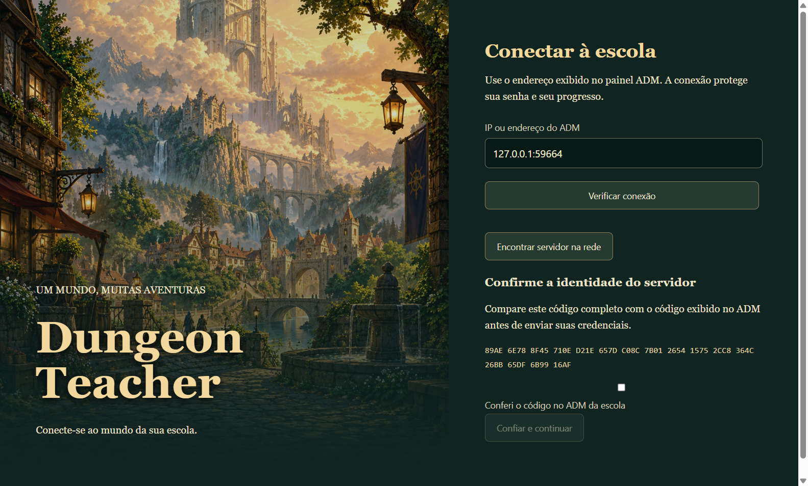
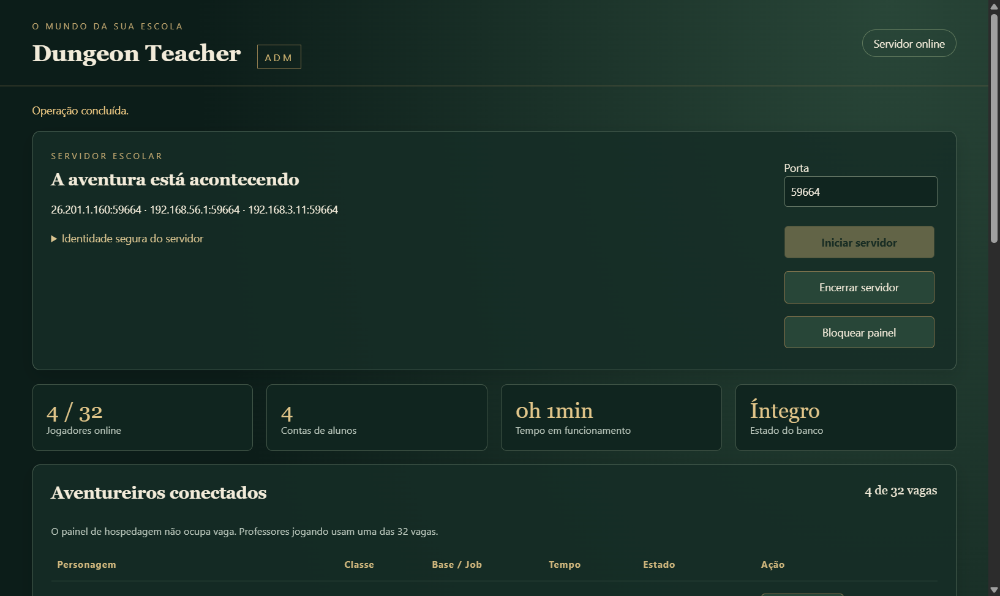
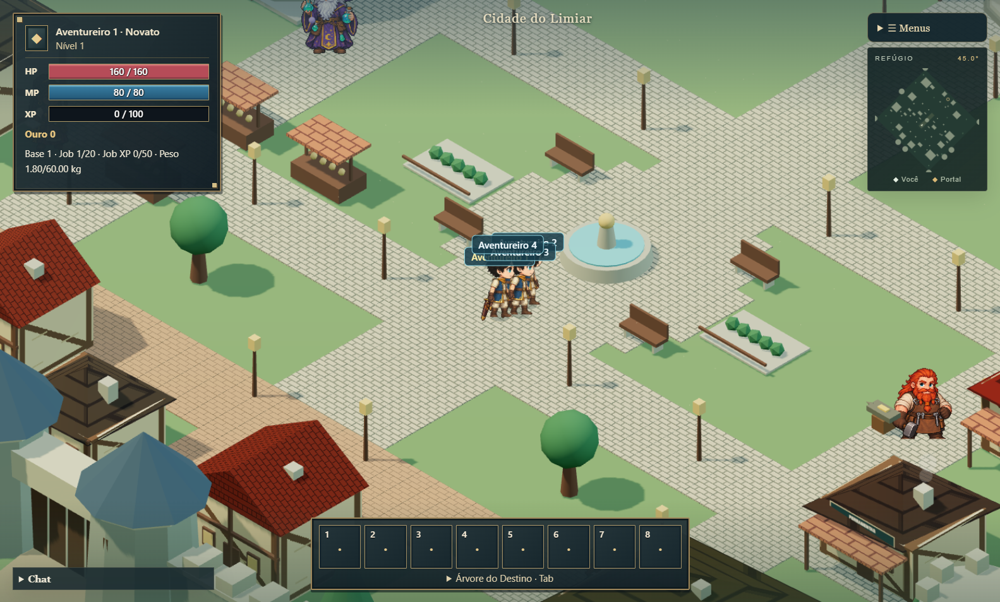
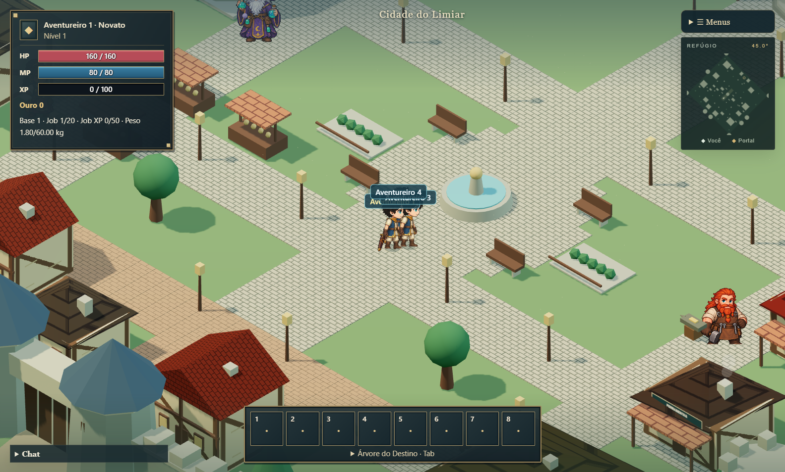
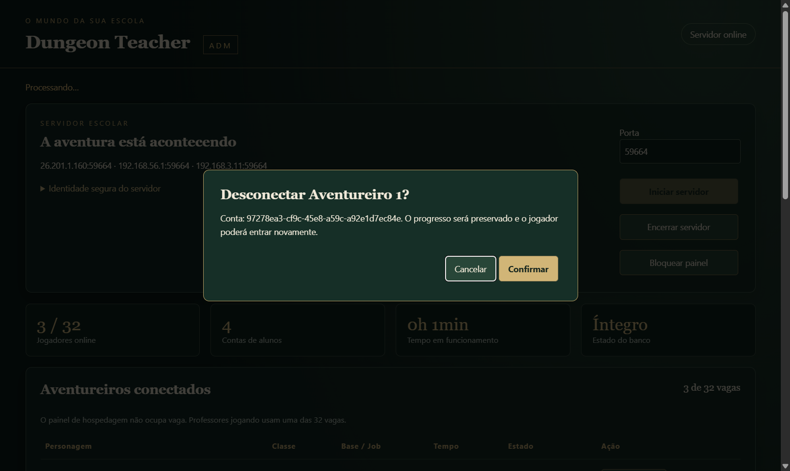
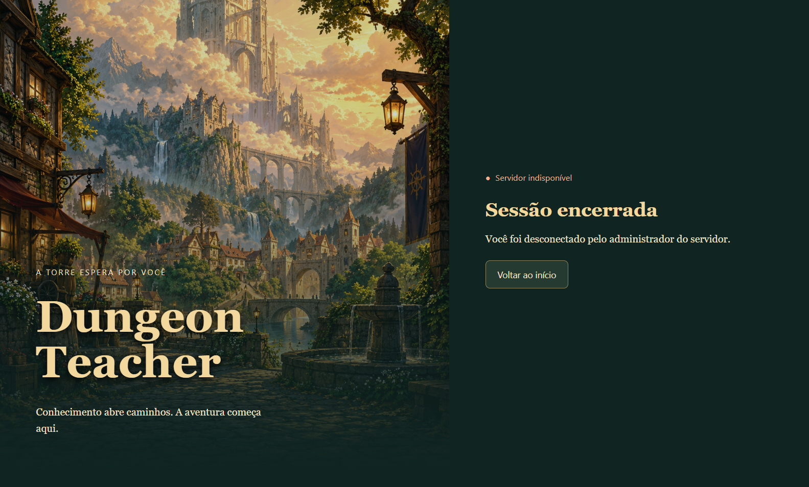
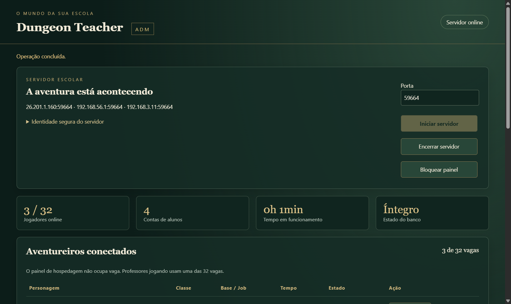
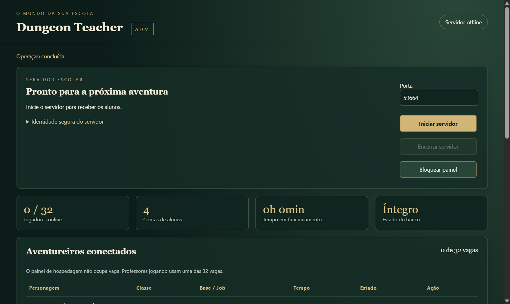

Dungeon Teacher — Iteração 33DUNGEON TEACHER · EVIDÊNCIAS
Iteração 33 — ADM e cliente escolar
Capturas reais do ADM e de clientes Electron usando os arquivos empacotados, perfis separados e um único banco de teste. Ensaio realizado no mesmo computador; LAN física pendente. Clique para ampliar.
 Primeiro acesso administrativoServidor online e identidade TLS
Primeiro acesso administrativoServidor online e identidade TLS
Endereço manual e conferência de identidade
Monitoramento com quatro jogadores
Quatro clientes no mesmo mundo Segunda sessão rejeitada
Segunda sessão rejeitada
Conta retornando ao cliente A
Confirmação de desconexão administrativa
Mensagem recebida pelo jogador
Backup e monitoramento
Servidor encerrado com segurança